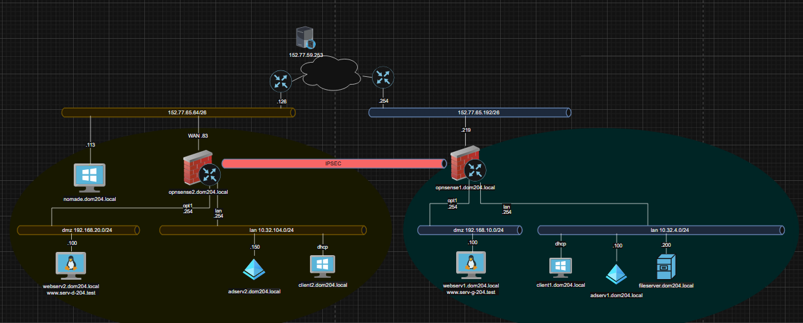

Infrastructure
Multi-sites
Système
Windows Server 2019
Firewall
OPNsense / NAT / IPSec
Sécurité
MFA / LDAP / GPO
Le Cahier des Charges
L'objectif de cette SAÉ était de concevoir une architecture réseau hybride et sécurisée reliant deux sites géographiques distincts. Le projet simule un environnement professionnel critique avec des services centralisés de gestion d'identité (Active Directory) et de fichiers, protégés par des firewalls OPNsense.
La complexité résidait dans l'interopérabilité des services entre sites, la mise en place d'un tunnel VPN IPSec pour la réplication AD, et la sécurisation des accès distants pour les utilisateurs nomades.
Topologie du Réseau
Site Principal (Site 1)
- • LAN : 10.32.B.0/24
- • DMZ : 192.168.10.0/24
- • ADServ1 (DNS/AD) & FileServer (DHCP)
- • WebServ1 (Rocky Linux)
Site Secondaire (Site 2)
- • LAN : 10.32.(100+B).0/24
- • DMZ : 192.168.20.0/24
- • ADServ2 (DNS/AD/DHCP)
- • Accès Nomade VPN
Visualisation de l'interconnexion multi-sites
Sécurité & Services
VPN IPSec & OpenVPN MFA
Mise en place d'un tunnel de site à site pour la réplication AD sécurisée. Configuration de l'accès nomade avec authentification LDAP couplée à un OTP (MFA) via l'application Authy.
GPOs & Automatisation
Déploiement massif de stratégies de groupe (GPO) pour configurer Chrome, restreindre les installations d'extensions, désactiver la mémorisation des mots de passe et automatiser les lecteurs réseau.
Administration Système Avancée
Gestion des identifiants via LAPS (Local Administrator Password Solution), chiffrement des postes clients avec BitLocker (clés stockées dans l'AD) et planification des sauvegardes Windows Server.
Challenges & Résultats
Le défi majeur a été la configuration minutieuse des règles de pare-feu OPNsense pour autoriser les flux RPC/AD sans compromettre la sécurité de la DMZ. La validation a été effectuée par captures Wireshark démontrant l'authentification LDAP sécurisée.
Stack Technique
- OPNsense (Router/FW)
- Windows Server 2019
- Active Directory / DNS
- OpenVPN (UDP/MFA)
- LAPS / BitLocker
- Wireshark (Audit)
Statut
Opérationnel
Livrables 6, 7 & 8 Terminés